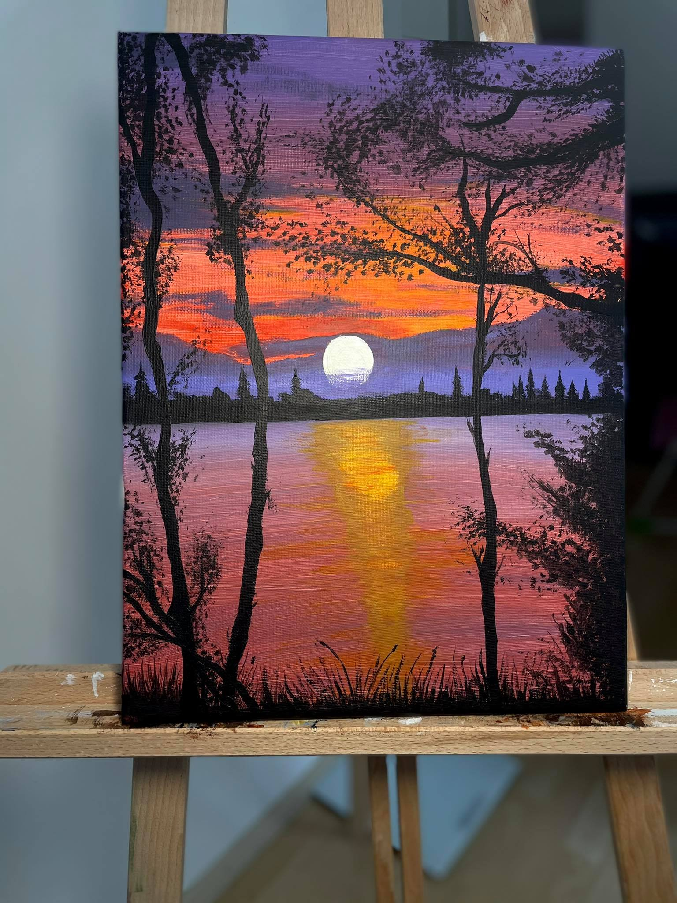

Hello, nice to meet you!
My name is Daniela Draganova. I am a finance student at UNWE that is The economy University in my native city.
I have recently become interested in web design and I really want professional development in this field. I am from Bulgaria, Sofia and I live with my wonderful boyfriend Stanislav.
He is an amazing programming specialist who actually gave me the idea to start studying Front-end especially HTML, CSS, JavaScript and etc.
my facebook profile!
Now I will tell you an intersting story about me. Before a month ago I fell ill with Covid-19. It was terrible. As we all already know, people with Covid need to isolate themselves and stop contact with other people. I stayed home for about two weeks and wondered how to spend all this free time. On the fifth day of the quarantine, I decided to order some basic painting materials. The shipment arrived and I was surrounded by canvases,acrylic paints, brushes and whatnot. I admit, I had no idea what exactly to do with them, but I had a great desire to start painting. I started watching different videos on You Tube, which really helped me a lot. Finishing my first painting, I was left breathless. It really became quite successful. Keep in mind that I have never been involved in painting and these were my first steps in art.And now I would like to present you all my works so far.
- My First Painting - The Night with The Full Moon Illuminating the lake
- My Second Painting - The Sunset and The Silence
- My Third Painting- The Lone Deer - the small original one
- My Fourth Painting - The Fiery Woman
- My Fifth Painting - The Lion King
- My Sixth Painting - The Poppis
- My Seventh Painting - The White Poppies
- My Eighth Painting - The Lone Deer - the big one
- My Ninth Painting - The Fairytale Unicorn
- My Tenth Painting - The Black and White Landscape
- My Eleventh Paintingand also the last one - The Sunset - The Beauty in The Shades


